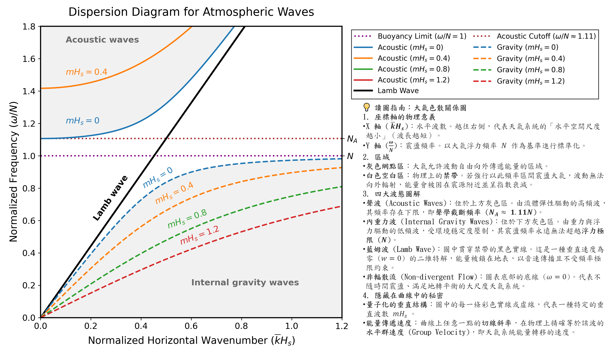

八、三維波動色散方程式之無因次化轉換證明#
證明目標：
假設與已知 (Assumptions & Preliminaries)#
【已知 1】 三維一般波動色散方程式 (3D wave dispersion relation) ：
\[\frac{\nu^4}{c^2} - \nu^2 \left( \bar{k}^2 + \bar{l}^2 + \bar{m}^2 + \Gamma^2 + \frac{N^2}{c^2} \right) + \left( \bar{k}^2 + \bar{l}^2 \right)N^2 = 0\]\(\nu \) : 系統的實數固有特徵角頻率 (Real eigenfrequency) \([\text{s}^{-1}]\)
\(c\) : 本地音速 (Local speed of sound) \([\text{m}\cdot\text{s}^{-1}]\)
\(\bar{k}\) : \(x\) 軸方向的水平波數／東西向波數 (Zonal wavenumber) \([\text{m}^{-1}]\)
\(\bar{l}\) : \(y\) 軸方向的水平波數／南北向波數 (Meridional wavenumber) \([\text{m}^{-1}]\)
\(\bar{m}\) : \(z\) 軸方向的垂直波數 (Vertical wavenumber) \([\text{m}^{-1}]\)
\(\Gamma\) : 大氣層結修正因子 \([\text{m}^{-1}]\)
\(N\) : 浮力頻率 (Brunt-Väisälä frequency) \([\text{s}^{-1}]\)
【定義 1】 無因次頻率 (Normalized frequency) ：
\[\begin{split}\begin{gather*} Y &\overset{\text{def}}{=}& \frac{\nu}{N} \\ \nu &=& YN \end{gather*}\end{split}\]\(Y\) : 歸一化無因次波頻 (Normalized dimensionless frequency) [無單位]，代表波動頻率相對於浮力頻率的比值
\(\nu \) : 系統的實數固有特徵角頻率 (Real eigenfrequency) \([\text{s}^{-1}]\)
\(N\) : 浮力頻率 (Brunt-Väisälä frequency) \([\text{s}^{-1}]\)
【定義 2】 無因次水平波數 (Normalized horizontal wavenumber) ：
\[\begin{split}\begin{gather*} X &\overset{\text{def}}{=}& \sqrt{\bar{k}^2 + \bar{l}^2} H_s \\ \bar{k}^2 + \bar{l}^2 &=& \frac{X^2}{H_s^2} \end{gather*}\end{split}\]\(X\) : 歸一化無因次水平波數 (Normalized dimensionless horizontal wavenumber) [無單位]，代表水平波數與大氣特徵高度尺度的乘積
\(\bar{k}\) : \(x\) 軸方向的水平波數／東西向波數 (Zonal wavenumber) \([\text{m}^{-1}]\)
\(\bar{l}\) : \(y\) 軸方向的水平波數／南北向波數 (Meridional wavenumber) \([\text{m}^{-1}]\)
\(H_{s}\) : 等溫大氣標高 (Atmospheric scale height) \([\text{m}]\)
【定義 3】 無因次垂直波數 (Normalized vertical wavenumber) ：
\[\begin{split}\begin{gather*} Z &\overset{\text{def}}{=}& \bar{m}H_s \\ \bar{m}^2 &=& \frac{Z^2}{H_s^2} \end{gather*}\end{split}\]\(Z\) : 歸一化無因次垂直波數 (Normalized dimensionless vertical wavenumber) [無單位]，代表垂直波數與大氣垂直尺度的比例關係
\(\bar{m}\) : \(z\) 軸方向的垂直波數 (Vertical wavenumber) \([\text{m}^{-1}]\)
\(H_{s}\) : 等溫大氣標高 (Atmospheric scale height) \([\text{m}]\)
【定義 4】 無因次大氣層結參數 (Normalized stratification parameter) ：
\[\begin{split}\begin{gather*} G &\overset{\text{def}}{=}& \Gamma H_s \\ \Gamma^2 &=& \frac{G^2}{H_s^2} \end{gather*}\end{split}\]\(G\) : 歸一化無因次大氣層結參數 (Normalized dimensionless stratification parameter) [無單位]，代表密度非均勻性對垂直特徵尺度的修正量
\(\Gamma \) : 大氣層結修正因子 (Stratification correction factor) \([\text{m}^{-1}]\)
\(H_{s}\) : 等溫大氣標高 (Atmospheric scale height) \([\text{m}]\)
【定義 5】 無因次音速參數 (Normalized sound speed parameter) ：
\[S \overset{\text{def}}{=} \frac{c^2}{N^2 H_s^2}\]\(S\) : 歸一化無因次音速參數 (Normalized dimensionless sound speed parameter) [無單位]，物理上代表聲波傳播速度與浮力波特徵尺度的比值
\(c^{2}\) : 本地音速平方 (Speed of sound squared) \([\text{m}^2\cdot\text{s}^{-2}]\)
\(N^{2}\) : 浮力頻率平方 (Brunt-Väisälä frequency squared) \([\text{s}^{-2}]\)
\(H_{s}^{2}\) : 大氣標高的平方 (Atmospheric scale height squared) \([\text{m}^2]\)
【推導 1】 頻率高次方項代換 ：
(a) 特徵頻率平方代換：
\[\begin{split}\begin{gather*} \nu &\overset{\text{定義 1}}{=}& Y N \\ \nu^2 &=& Y^2 N^2 \end{gather*}\end{split}\](b) 特徵頻率四次方代換：
\[\begin{split}\begin{gather*} \nu &\overset{\text{定義 1}}{=}& Y N \\ \nu^4 &=& Y^4 N^4 \end{gather*}\end{split}\]\(\nu \) : 系統的實數固有特徵角頻率 (Real eigenfrequency) \([\text{s}^{-1}]\)
\(Y\) : 歸一化無因次波頻 (Normalized dimensionless frequency) [無單位]
\(N\) : 浮力頻率 (Brunt-Väisälä frequency) \([\text{s}^{-1}]\)
證明#
這是一道非常經典的氣象動力學繪圖題。Gill 的 Atmosphere-Ocean Dynamics 書中 Figure 6-17 展示了這四種波在頻譜空間上的漸近行為與界線。為了用 Python 重現這張圖，我們需要先將你剛才推導出的色散方程式「無因次化（Non-dimensionalize）」。
數學轉換（無因次化）#
我們定義三個無因次變數，作為繪圖的 X 軸、Y 軸與不同曲線的參數：
X 軸（無因次水平波數）： \(X = \bar{k}H_s\)
Y 軸（無因次頻率）： \(Y = \frac{\nu}{N}\)
曲線參數（無因次垂直波數）： \(Z = \bar{m}H_s\)
將這些變數代入三維波動的色散方程式 \((9a)\)，並引入地球大氣的常數：
取雙原子氣體絕熱指數 \(\gamma = 1.4\)
聲速平方與浮力頻率的比例常數：\(S = \frac{c^2}{N^2 H_s^2} = \frac{\gamma^2}{\gamma - 1} \approx 4.9\)
大氣層結參數：\(G = \Gamma H_s = \frac{1}{\gamma} - 0.5 \approx 0.214\)
方程式將化簡為一個漂亮的關於 \(Y^2\) 的一元二次方程式：
而藍姆波 (Lamb wave) 的色散方程式 \((8b)\) 則化簡為：
討論#
這張圖是探討大氣波動極為核心的色散關係圖（Dispersion Diagram）。它視覺化了流體力學方程式在特定邊界條件下，所允許存在的波動狀態。

觀察圖表的核心物理意義#
當您執行程式碼後，會看到雙對數圖上呈現非常清晰的界線：
右下角的浮力波 (Gravity Waves)：不管水平波數 \(\bar{k}H_s\) 多大，所有低頻點狀虛線最終都會被灰色虛線 (\(\nu/N = 1\)) 壓制。這完美印證了我們在第 5 題推導的：環境層結穩定度 \(N\) 是內重力波震盪的最快極限。
左上角的聲波 (Acoustic Waves)：所有的短虛線在向左延伸（極長波）時，都不會掉到 0，而是被紫色虛線 (\(\nu/N \approx 1.11\)) 托住，這就是聲學截斷頻率 \(N_A\) 的視覺化證明。
貫穿中央的藍姆波 (Lamb Wave)：這是一條斜率為 1 的直線，代表它是非色散的（波速為常數音速），且其頻率不受 \(N\) 或是 \(N_A\) 的上下限約束，橫跨了整個頻譜。
坐標軸的物理意義#
X 軸（\(\bar{k}H_s\)）：無因次水平波數 這代表波在水平方向上的「空間擁擠程度」。數值越小（靠左），代表水平波長越長（例如跨越數千公里的大尺度天氣系統）；數值越大（靠右），代表水平波長越短（例如幾公里寬的積雨雲或微尺度擾動）。
Y 軸（\(\omega/N\)）：無因次頻率 這代表波隨時間「震盪的快慢」。它被環境的浮力頻率 \(N\) 給標準化了。數值越大（靠上），波震盪越劇烈；數值越小（靠下），波的變化越緩慢。
每一條線的意義與「量子化」疑問#
這些線代表什麼？ 每條虛線或點虛線，都代表一個具有特定垂直結構（特定的垂直波數 \(\bar{m}\)）的波，其頻率與水平波長之間的對應關係。
是特舉幾條線，還是只有這幾條？ 圖中畫出的 \(mH_s = 0, 0.4, 0.8, 1.2\) 只是「舉例」。但在封閉的大氣模型中（例如有堅硬的地表與模式頂部），垂直波數 \(\bar{m}\) 確實是被量子化（Quantized）的！為了滿足上下邊界垂直速度 \(w=0\) 的條件，波的垂直結構只能是半波長的整數倍（即 \(\bar{m} = \frac{n\pi}{L_z}\)）。
因此，這張圖實際上存在著無數條離散的曲線（對應 \(n=1, 2, 3...\)），這些密集的離散曲線填滿了整塊灰色的允許區域 。
點與點之間的相對關係#
同一條線上不同的點： 代表具有「相同垂直層數（垂直波長固定）」，但「水平尺度不斷縮放」的同族波動。當水平波數 \(\bar{k}\) 改變時，頻率 \(\omega\) 必須沿著這條線嚴格跟著改變。此外，曲線上任意一點的切線斜率，在物理上精確等於該波的水平群速度（Horizontal Group Velocity），也就是波傳遞能量的速度 。
同一個 X 座標不同點： 代表我們在看「水平寬度一模一樣」的擾動。沿著垂直線往上下看，會發現它能以多種不同的頻率震盪。高頻對應的是垂直波長不同的聲波，低頻對應的是垂直波長不同的浮力波。
同一個 Y 座標不同點： 代表我們用一個「固定頻率的節拍器」去擾動大氣。這條水平線會切過許多不同的曲線，意味著同一個震盪頻率，可以激發出多種水平波長與垂直波長組合不同的波，它們會在空間中同時向外傳播並發生干涉。
白色的區域與不存在的波#
圖中沒有被灰色網點覆蓋的白色區域（包含聲波下限與浮力波上限之間的空白帶），被稱為「衰減區（Evanescent Zone）」或「禁帶（Forbidden Zone）」。
絕對不存在這種 wave 嗎？ 這取決於您對「存在」的定義。在數學與物理上，「能夠自由、無損耗向遠方傳遞能量的自由行進波（Freely propagating waves）」在這些白色區域是絕對不存在的 。
物理本質： 如果您強行以白色區域內的頻率（例如 \(\omega/N = 1.05\)，介於浮力極限與聲學截斷之間）去震盪空氣，數學解依然存在，但其垂直波數 \(\bar{m}\) 會變成虛數。這代表擾動無法形成波動，其振幅會隨空間距離呈「指數型快速衰減（Exponential decay）」。擾動的能量會被困在震源附近，無法像水波一樣輻射出去。
特例： 您會注意到有一條黑色的實線（藍姆波，Lamb wave）大搖大擺地切過了這塊白色禁區 。這是因為藍姆波是極度特殊的二維邊界波（垂直速度為零），它不受三維內部重力波與聲波的頻率極限約束，因此能存在於內部波的禁帶之中。
code#
詳細 code 可以參考這個